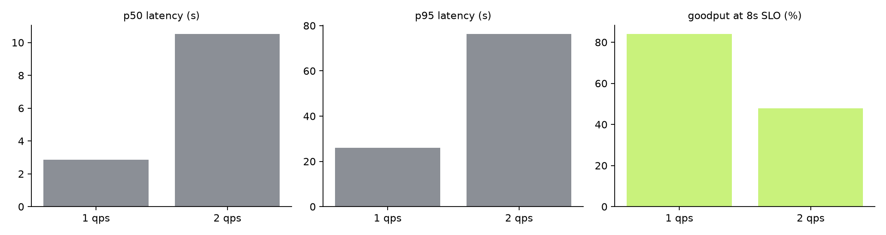

Hop-bounded agentic RAG, DeepSeek V4.1 Flash via OpenCode Go. Deterministic scoring: normalized exact match, token F1, supporting-paragraph recall. No LLM judge in the headline.
## hotpotqa | policy | n | em | f1 | support_recall | hops_mean | cache_hit_rate | cost_usd | latency_p50_ms | latency_p95_ms | |---|---|---|---|---|---|---|---|---|---| | fine | 150 | 0.427 | 0.588 | 0.620 | 1.43 | 8.7% | $0.01602 | 4.07s | 28.32s | | coarse | 150 | 0.560 | 0.707 | 0.917 | 1.11 | 2.1% | $0.01857 | 2.62s | 27.63s | Paired over 150 questions: coarse minus fine F1 +0.119 (95% CI +0.057 to +0.181); McNemar EM chi2 13.88, p 0.000; cost delta $+0.000017 per question.   ## musique | policy | n | em | f1 | support_recall | hops_mean | cache_hit_rate | cost_usd | latency_p50_ms | latency_p95_ms | |---|---|---|---|---|---|---|---|---|---| | fine | 50 | 0.260 | 0.302 | 0.337 | 1.42 | 0.0% | $0.00751 | 4.30s | 27.51s | | coarse | 50 | 0.260 | 0.313 | 0.527 | 1.26 | 0.0% | $0.00949 | 4.33s | 12.34s | Paired over 50 questions: coarse minus fine F1 +0.011 (95% CI -0.077 to +0.097); McNemar EM chi2 0.25, p 0.617; cost delta $+0.000039 per question.  Open-loop Poisson arrivals against the HTTP API. Latency measured from arrival, not send. Goodput is the share of requests inside an 8s SLO.

| offered load | requests | p50 | p95 | goodput at 8s | |---|---|---|---|---| | 1 qps | 44 | 2.85s | 26.02s | 84.1% | | 2 qps | 94 | 10.53s | 76.36s | 47.9% |